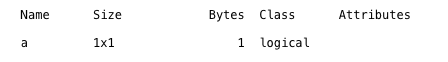
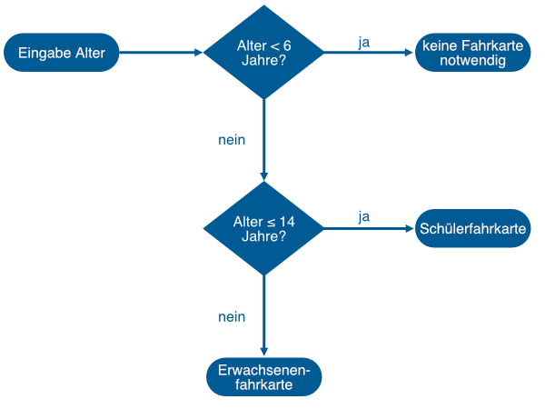

Kontrollstrukturen: die Programmverzweigung
Contents
Kontrollstrukturen: die Programmverzweigung¶
Einführung und Lernziele¶
Bisher haben wir kleinere MATLAB-Skripte geschrieben, bei denen die Anweisungen Zeile für Zeile ausgeführt wurden. Ein Programm oder Skript, das nur aus einer einfachen Aneinanderreihung von Befehlen besteht, nennt man linear. Bisher hatten wir also nur lineare Programme.
In diesem und in den nächsten MATLAB Live Skripten werden wir uns mit dem Thema Kontrollstruktur beschäftigen. Kontrollstrukturen dienen dazu, den linearen Ablauf der Programme oder Skripte aufzubrechen und beispielsweise auf Eingaben der Benutzerinnen und Benutzer zu reagieren. Wir starten dazu mit der Kontrollstruktur Programmverzweigung. Wenn ein MATLAB Skript auf eine Eingabe oder auf den aktuellen Zustand einer Variable reagieren soll, muss der MATLAB-Interpreter in der Lage sein, Vergleiche zu ziehen und entscheiden zu können. Daher beschäftigen wir uns vorher mit dem Datentyp Bool und Vergleichen.
Der boolesche Datentyp¶
Viele Möglichkeiten unserer Gesellschaft stehen nur Volljährigen offen und sind damit an eine Altersangabe gebunden. Wenn jetzt ein Computersystem vorab prüfen soll, ob Volljährigkeit vorliegt oder nicht, dann brauchen wir einen einfachen Vergleich. Angenommen, wir würden das Alter der Benutzers oder der Benutzerin in der Variable alter speichern. Damit wäre ein simples Beispiel für eine einfache Bedingung der mathematische Ausdruck alter < 18. Der Wert der Variablen alter wird also mit der Zahl 18 verglichen. Dieser Vergleich ist entweder wahr (true) oder falsch (false). Oder anders formuliert, ist diese Bedingung entweder erfüllt oder nicht erfüllt.
Um den Wahrheitswert einer Bedingung zu speichern, hat MATLAB einen eigenen Datentyp, einen sogenannten booleschen Datentyp. Nach dem englischen Wort wird dieser Datentyp in der Informatik üblicherweise Boolean genannt. MATLAB verwendet davon abweichend den Begriff Logical als Klasse der booleschen Datentypen. Das besondere an diesem Datentyp ist, dass eine Variable diesen Datentyps nur zwei verschiedene Werte annehmen kann, nämlich
true: Wahrheitswert ist wahr oder
false: Wahrheitswert ist falsch.
Intern speichert MATLAB false als 0 und true als 1, deswegen wird die Funktion disp() auch 0 und 1 anzeigen, wenn wir eine boolesche Variable anzeigen lassen.
Exercise 8
Verändern Sie in der nachfolgenden Code-Zelle den Wert der Variablen a. Setzen Sie einmal a = false und einmal a = true. Beobachten Sie, was der disp()-Befehl ausgibt.
% Hier Ihr Code:
a = false;
disp(a)
Solution to Exercise 8
a = false;
disp(a);
a = true;
disp(a);
Wird die Variable auf falsch gesetzt (a = false), so gibt die disp()-Funktion eine 0 aus. Wird die Variable a jedoch auf wahr gesetzt (a = true), so gibt die disp()-Funktion eine 1 aus.
Aber wie kann man dann überprüfen, ob in einer Variablen der Datentyp Integer oder der Datentyp Boolean gespeichert ist? Dazu gibt es das Kommando whos. Führen Sie die nächste Code-Zelle aus.
a = false;
whos a
Sie sollten jetzt in der Ausgabe Folgendes sehen:
Das Kommando whos gibt fünf Informationen aus:
Name: Name der Variablen
Size: Dimension der Variablen, wenn man sie als Matrix interpretiert (intern speichert MATLAB alles als Matrix)
Bytes: Angabe, wie viel Speicher die Variable belegt
Class: Datentyp, hier logical als Bezeichnung für boolesche Datentypen
Attributes: weitere Eigenschaften, um besondere Variablen wie beispielsweise globale Variablen zu kennzeichnen
Weitere Details zu dem Kommando whos finden Sie in der MATLAB-Dokumentation https://de.mathworks.com/help/matlab/ref/whos.html
Vergleiche mit Zahlen¶
Nachdem wir jetzt den Datentyp kennegelernt haben, mit dem MATLAB das Ergebnis eines Vergleichs speichert, kommen wir nun zu dem Vergleich selbst.
Zunächst beschäftigen wir uns mit mathematischen Vergleichen. In der Mathematik ist ein Vergleich ein Ausdruck mit zwei Argumenten und einem Vergleichsoperator in der Mitte. Die beiden Argumente können auch unterschiedliche Datentypen haben, dann muss der Vergleichsoperator aber sinnvoll für diese Datentypen definiert sein. Z.B. darf man einen Integer mit einem Float vergleichen
3 < 17.2
aber
3 < 'vier'
ist nicht sinnvoll und undefiniert. Es gibt die folgenden Vergleichsoperatoren in MATLAB:
<kleiner<=kleiner oder gleich>größer>=größer oder gleich==gleich~=ungleich
Tipp: Das Zeichen ~ heißt übrigens Tilde und befindet sich bei einer deutschen Tastatur neben der Return-Taste, siehe gelb markierte Taste im nachfolgenden Bild:
Im interaktiven Modus von MATLAB können wir leicht den Wahrheitsgehalt von Vergleichen überprüfen. Wir setzen eine Variable auf den Wert 7:
x = 7;
Jetzt probieren wir in den nachfolgenden Code-Zellen verschiedene Vergleichsoperatoren aus. Zur Erinnerung, 0 steht dabei für false (falsch) und 1 für wahr (true).
Ist x genau gleich 15?
x == 15
Ist x kleiner als 42?
x < 42
Ist x genau 30?
x == 30
Ist x ungleich 42?
x ~= 42
Ist x größer als 30?
x > 30
Ist x größer gleich 30?
x >= 30
Exercise 9
Wählen Sie sich eine Zahl. Testen Sie anschließend:
Ist Ihre Zahl kleiner gleich 5?
Ist Ihre Zahl genau 17?
Ist Ihre Zahl nicht gleich 17?
Ist Ihre Zahl positiv?
Ist Ihre Zahl kleiner als -17.7?
Solution to Exercise 9
% Eingabe: Wahl meiner Zahl
x = 33;
% kleiner gleich 5?
x <= 5
% genau gleich 17?
x == 17
% nicht gleich 17?
x ~= 17
% positiv?
x > 0
% kleiner als -17.7?
x < -17.7
Programmverzweigungen mit einen Zweig: if¶
Bei einer Programmverzweigung wird Code abhängig von einer Bedingung ausgeführt. Im einfachsten Fall liegt ein if-Block vor. Die Syntax lautet wie folgt:
if bedingung
anweisungsblock
end
Ist die Bedingung erfüllt, also “true”, so wird der eingerückte Anweisungsblock ausgeführt, ansonsten übersprungen. Damit ist gemeint, dass der MATLAB-Interpreter nach dem end des if-Blocks weiter macht, falls die Bedingung nicht erfüllt (= false) wird.
Wir betrachten nun ein Beispiel:
alter = 17;
if alter >= 18
disp('Sie dürfen Alkohol kaufen.');
end
disp('Bananen dürfen Sie immer kaufen, egal wie alt Sie sind ...');
Und jetzt mit einer Benutzerabfrage kombiniert:
alter = input('Wie alt sind Sie?');
if (alter >= 18)
disp('Sie dürfen Alkohol kaufen.');
end
disp('Bananen dürfen Sie immer kaufen, egal wie alt Sie sind...');
Exercise 10
Schreiben Sie ein Skript, das einen Benutzer oder eine Benutzerin nach der aktuellen Temperatur fragt. Wenn die Temperatur kleiner gleich 10 ˚C ist, soll ausgegeben werden: “Heute ist es aber kalt!”
Solution to Exercise 10
% Eingabe
temperatur = input('Welche Temperatur haben wir aktuell?')
% Verarbeitung und Ausgabe
if temperatur <= 10
disp('Heute ist es aber kalt!')
end
Exercise 11
Schreiben Sie ein Skript, das eine Benutzerin oder einen Benutzer nach einer Zahl fragt. Wenn die Zahl kleiner als 0 ist, soll ausgegeben werden: “Die Zahl ist negativ.” Wenn die Zahl genau gleich 0 ist, soll ausgegeben werden: “Die Zahl ist Null.” Wenn die Zahl größer als 0 ist, soll ausgegeben werden: “Die Zahl ist positiv.”
Wie viele if-Blöcke brauchen Sie für die Umsetzung dieser Mini-Übung?
Solution to Exercise 11
% Eingabe
zahl = input('Geben Sie bitte eine Zahl ein: ');
% Verarbeitung und Ausgabe
if zahl < 0
disp('Die Zahl ist negativ.');
end
if zahl == 0
disp('Die Zahl ist Null.');
end
if zahl > 0
disp('Die Zahl ist positiv.');
end
Der Code erfordert drei if-Blöcke.
Programmverzweigungen mit zwei Zweigen: if – else¶
In unserem Alltag kommen häufig Entscheidungen zwischen zwei Möglichkeiten vor. Wenn ich an eine T-Kreuzung komme, muss ich mich entscheiden: links oder rechts? Betrete ich ein Gebäude entscheide ich zwischen Treppe oder Fahrstuhl. Mein Alter entscheidet darüber, ob ich etwas darf oder nicht darf. Für diese Wahl zwischen zwei Möglichkeiten gibt es zweiteilige Programmverzweigungen. Wir erweitern die Syntax mit dem if-Block um ein neues Element, nämlich den sogenannten else-Block:
if bedingung
anweisungsblock 1
else
anweisungsblock 2
end
Wichtig ist, dass das komplette if-else-Konstrukt mit einem gemeinsamen end beendet wird. Würden wir das end wie ursprünglich vor dem Beginn des else-Blocks stehen lassen, so hätten wir ungültigen Code.
Falls die Bedingung erfüllt ist, wird der 1. Anweisungsblock ausgeführt, ansonsten der 2. Anweisungsblock. Danach führt der MATLAB-Interpreter alles nach dem if-else-Konstrukt aus, d.h. der Interpreter macht mit dem normalen Programmablauf weiter.
Hier wieder das Beispiel mit dem Alter:
alter = input('Wie alt sind Sie? ');
if alter >= 18
disp('Sie sind volljährig, Sie dürfen Alkohol kaufen.');
else
disp('Sie sind noch nicht volljährig und dürfen daher keinen Alkohol kaufen.');
end
disp('Jetzt haben wir aber genug über den Alkoholkauf geredet...')
Exercise 12
Schreiben Sie ein Skript, das nach dem aktuellen Monat fragt (1 für Januar, 2 für Februar, 3 für März, usw.). Wenn der aktuelle Monat Januar bis Juni ist, soll ausgegeben werden: “Dieser Monat gehört zur 1. Jahreshälfte.” Ansonsten soll ausgegeben werden: “Dieser Monat gehört zur 2. Jahreshälfte.”
Solution to Exercise 12
% Eingabe
monat = input('Geben Sie bitte den aktuellen Monat ein, 1 für Januar, 2 für Februar usw.');
% Verarbeitung und Ausgabe
if monat <= 6
disp('Dieser Monat gehört zur 1. Jahreshälfte.');
else
disp('Dieser Monat gehört zur 2. Jahreshälfte.');
end
Exercise 13
Schreiben Sie ein Skript, das nach der aktuellen Temperatur fragt. Wenn die aktuelle Temperatur kleiner gleich 3 ˚C ist, dann lassen Sie ausgeben: “Vorsicht, es besteht Glatteisgefahr!” und ansonsten “Kein Grund zur Sorge.”
Solution to Exercise 13
% Eingabe
temperatur = input('Welche Temperatur haben wir aktuell?');
% Verarbeitung und Ausgabe
if temperatur <= 3
disp('Vorsicht, es besteht Glatteisgefahr!');
else
disp('Kein Grund zur Sorge.')
end
Programmverzweigungen mit vielen Zweigen: if – elseif – else¶
Eins, zwei, drei, viele … häufig müssen mehr als zwei Fälle unterschieden werden. In Mini-Übung 4 haben wir beispielsweise überprüft, ob eine Zahl negativ oder positiv oder Null ist. Ein Beispiel aus dem Alltag ist der Kauf einer Fahrkarte für den ÖPNV. Meist wird beim Ticketpreis unterschieden, ob die Person jünger als 6 ist (keine Fahrkarte notwendig), zwischen 6 und 14 ist (Schülerfahrkarte) oder älter als 14 (Erwachsenenfahrkarte). Da es jetzt drei Altersklassen gibt, können wir kein if-else-Konstrukt benutzen, denn nur weil die Person beispielsweise nicht jünger als 6 ist wissen wir noch lange nicht, ob die Person eine Schülerfahrkarte oder eine Erwachsenenfahrkarte braucht.
Probieren wir es einfach:
alter = 8;
if alter < 6
disp('keine Fahrkarte notwendig');
end
if alter <= 14
disp('Schülerfahrkarte');
end
if alter > 14
disp('Erwachsenenfahrkarte');
end
Sieht zunächst einmal gut aus. Für ein Alter von 8 Jahren wird tatsächlich Schülerfahrkarte ausgegeben. Wenn wir jetzt aber das Alter auf 5 Jahre setzen, so bekommen wir zwei Ausgaben:
alter = 5;
if alter < 6
disp('keine Fahrkarte notwendig');
end
if alter <= 14
disp('Schülerfahrkarte');
end
if alter > 14
disp('Erwachsenenfahrkarte');
end
Wir erhalten die Ausgabe "keine Fahrkarte notwendig", weil die Bedingung des 1. if-Konstrukts erfüllt ist (alter < 6). Danach wird aber auch noch die Ausgabe "Schülerfahrkarte" angezeigt, weil auch die Bedingung des 2. if-Konstrukts (alter <= 14) erfüllt ist. So geht es also nicht, zwischen drei Bedingungen zu unterscheiden.
Probieren wir es mit einem zusätzlichen if-else-Konstrukt für die Unterscheidung der Kinder.
alter = 5;
if alter < 6
disp('keine Fahrkarte notwendig');
else
disp('Schülerfahrkarte');
end
if alter > 14
disp('Erwachsenenfahrkarte');
end
Jetzt sind aber Erwachsene problematisch:
alter = 27;
if alter < 6
disp('keine Fahrkarte notwendig');
else
disp('Schülerfahrkarte');
end
if alter > 14
disp('Erwachsenenfahrkarte');
end
Tatsächlich läuft unser Programm-Code nur korrekt, wenn wir in den else-Zweig noch zusätzlich zwischen “jünger als 14” und “älter als 14” unterscheiden.
Führen Sie die folgende Code-Zelle mehrfach aus. Ändern Sie dabei das Alter. Probieren Sie beispielsweise 5, 8, 11, 16, 21 und Ihr Alter aus.
alter = 27;
if alter < 6
disp('keine Fahrkarte notwendig');
else
if alter <= 14
disp('Schülerfahrkarte');
else
disp('Erwachsenenfahrkarte');
end
end
Um den obigen Code besser zu verstehen, zeichen wir den Ablauf schematisch:
Es wäre schöner, wenn es für solche Mehrfachverzweigungen etwas übersichtlicheren Code gäbe. Und in der Tat, den gibt es. Man könnte sozusagen den Start des else-Konstruktes mit dem nachfolgenden if-Konstrukt verschmelzen. Das Ergebnis davon ist die if-elseif-else-Syntax. Allgemein sieht das if-elseif-else-Konstrukt so aus:
if bedingung 1
anweisungsblock 1
elseif bedingung 2
anweisungsblock 2
elseif bedingung 3
anweisungsblock 3
...
else
anweisungsblock n
end
Hier die besser lesbare Version der Unterscheidung von Zahlen in negative Zahlen, 0 und positive Zahlen aus Mini-Übung 4:
a = 17
if a == 0
disp("a ist Null.")
elseif a < 0
disp("a ist negativ.")
else
disp("a ist positiv.")
end
Und jetzt noch einmal eine besser lesbare Version des Fahrkartenautomaten:
alter = 27;
if alter < 6
disp('keine Fahrkarte notwendig');
elseif alter <= 14
disp('Schülerfahrkarte');
else
disp('Erwachsenenfahrkarte');
end
Exercise 14
Sie finden den aktuellen Bußgeldkatalog für Geschwindigkeitsüberschreitungen mit dem PKW im Internet auf der Seite: https://www.bussgeldkatalog.org/geschwindigkeitsueberschreitung/ Schreiben Sie ein MATLAB-Skript, dass abhängig von der Geschwindigkeitsüberschreitung ausgibt, welche Strafe in Euro verhängt wird. Die Tabelle für das Jahr 2022 lautet wie folgt:

Solution to Exercise 14
% Eingabe
verstoss = input('Wieviel zu schnell ist die Person gefahren? ')
% Verarbeitung und Ausgabe
if verstoss <= 10
disp('20 EUR');
elseif verstoss <= 15
disp('40 EUR');
elseif verstoss <= 20
disp('60 EUR');
elseif verstoss <= 25
disp('100 EUR');
elseif verstoss <= 30
disp('150 EUR');
elseif verstoss <= 40
disp('200 EUR');
elseif verstoss <= 50
disp('320 EUR');
elseif verstoss <= 60
disp('480 EUR');
elseif verstoss <= 70
disp('600 EUR');
else
disp('700 EUR');
end
Exercise 15
Schreiben Sie ein Skript, das die aktuelle Temperatur von einem Benutzer oder einer Benutzerin abfragt. Wenn die Temperatur
<= - 10 ˚C ist, dann Ausgabe: “Es ist bitterkalt.”
<= 0 ˚C ist, dann Ausgabe: “Es ist kalt.”
<= 10 ˚C ist, dann Ausgabe: “Es ist kühl, aber OK.”
<= 20 ˚C ist, dann Ausgabe: “Es ist frühlingshaft.”
<= 30 ˚C ist, dann Ausgabe: “Es ist heiß!”
> 30 ˚C ist, dann Ausgabe: “Das ist ja nicht mehr auszuhalten heiß!!!”
Solution to Exercise 15
% Eingabe
temperatur = input('Welche Temperatur haben wir aktuell? ');
% Verarbeitung und Ausgabe
if temperatur <= - 10
disp('Es ist bitterkalt.');
elseif temperatur <= 0
disp('Es ist kalt.');
elseif temperatur <= 10
disp('Es ist kühl, aber OK.');
elseif temperatur <= 20
disp('Es ist frühlingshaft.');
elseif temperatur <= 30
disp('Es ist heiß!');
else
disp('Das ist ja nicht mehr auszuhalten heiß!')
end
Zusammenfassung¶
In diesem MATLAB Live Skript haben Sie die erste Kontrollstruktur kennengelernt, um ein lineares MATLAB-Programm in ein nicht-lineares MATLAB-Programm zu verwandeln, das auf Eingaben von Benutzer:innen oder Zustände von Variablen reagiert. Mit Hilfe von if, elseif und else können Sie nun beliebig viele Verzweigungen programmieren. Damit der MATLAB-Interpreter den Programm-Code in einer Verzweigung ausführt, muss die Bedingung für diese Verzweigung erfült sein. Bedingungen sind entweder wahr oder falsch, was MATLAB in einem booleschen Datentyp abspeichert. Für die Auswertung der Bedingung haben wir bisher Vergleiche von Zahlen betrachtet. Andere Bedingungen beispielsweise auch für Texte werden wir noch kennenlernen.